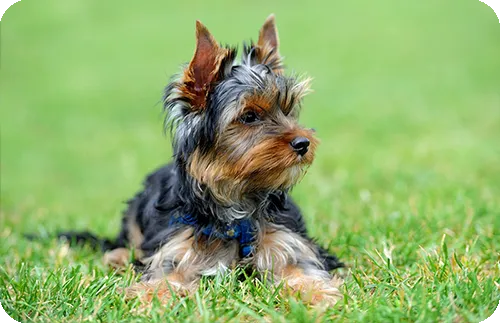

Presentación

El Yorkshire Terrier es una raza de perro de compañía de tamaño pequeño, elegante y compacto, con un pelaje largo, fino y sedoso que suele dividirse desde la nuca hasta la cola y cae hacia los lados del cuerpo. Aunque pequeño, combina un aspecto delicado con una personalidad valiente y decidida. El color del pelaje más típico es una mezcla de azul acero en el cuerpo y dorado en la cabeza y extremidades, lo que le da su apariencia distintiva.
Personalidad
Son perros muy enérgicos, curiosos e inteligentes, con una gran personalidad en un cuerpo pequeño. Son cariñosos con sus familias y a menudo muestran un fuerte instinto protector, lo que les hace excelentes compañeros. Pueden ser alertas y vocales, sobre todo si no están suficientemente socializados, y suelen disfrutar de la atención humana y el juego.
Origen
Esta raza se desarrolló en el Reino Unido, concretamente en la región de Yorkshire, durante el siglo XIX. Originalmente se crió para cazar roedores en fábricas, molinos y minas, aprovechando su tamaño reducido y su agilidad. Con el tiempo se fue convirtiendo en un perro de compañía muy apreciado y popular en hogares de todo el mundo.
Salud
El Yorkshire Terrier suele gozar de buena salud general y vive entre aproximadamente 12 y 16 años, aunque como muchas razas pequeñas puede ser susceptible a ciertos problemas como luxación de rótula, problemas oculares, dentales y otras afecciones hereditarias. Mantener revisiones veterinarias periódicas y controlar su peso es importante para su bienestar.
Aseo
El pelaje largo requiere cuidados frecuentes para evitar que se enrede o forme nudos. Es recomendable cepillar su pelo a diario o cada pocos días, y realizar baños y cortes de pelo regulares según el estilo deseado. También es importante mantener una buena higiene dental y recortar las uñas para evitar problemas asociados.
Nutrición
Debido a su pequeño tamaño y metabolismo rápido, los Yorkshire Terrier necesitan una dieta equilibrada y adaptada a las necesidades de las razas pequeñas. Se recomienda alimento de alta calidad diseñado para perros pequeños, con porciones ajustadas a su edad, nivel de actividad y peso. También es importante evitar alimentos altos en grasa y consultar con el veterinario para asegurar una nutrición óptima.